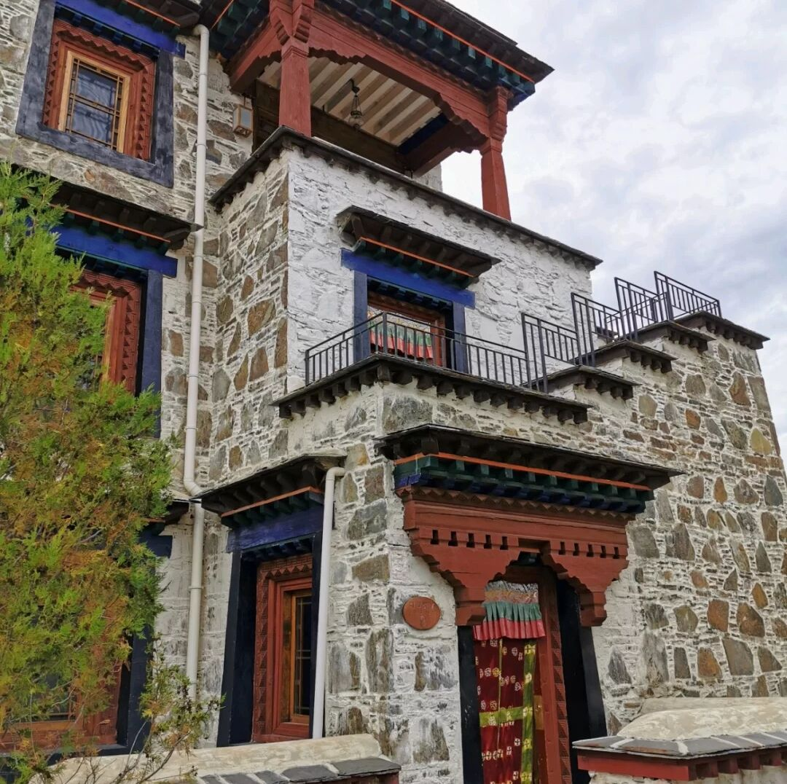
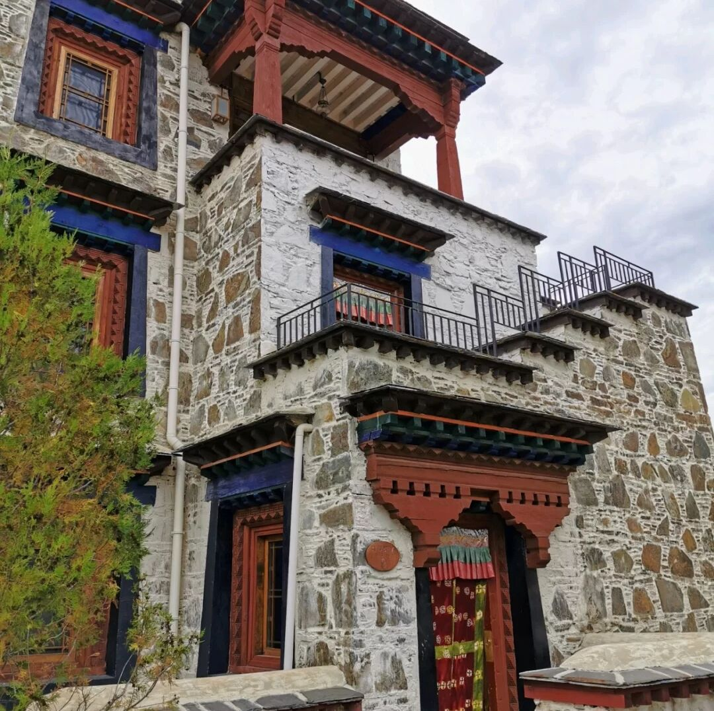

觅寻身体和心灵的隐匿之所
神秘、自然、生机勃勃
知你心者，让你从容

 

孜色民宿
孜色民宿正面面对着著名的跑马山，因地势较高，完美利用坡地高差，可近揽跑马山全貌，远眺洁白雪山，俯瞰炉城。民宿为现代藏式风格,采光极佳。庭院地势高风景秀丽，有火塘可以烧烤。
☎电话：080-88888888
✉地址:康定市炉城镇白土坎村
☛推荐指数： ★★★★
♛价格: 380-980
康定归山民宿
在传统的藏式村落中，这一间民宿的存在显得尤为现代。木质结构的设计将民宿的整体风格推向了日式简约,民宿距离距离中谷温泉很近，步行只要几分钟，吃完饭和朋友一起泡泡温泉,遇到天气好的时候还能看到星空，仿佛进入世外桃源一般。
☎电话：080-8888789
✉地址:康定市雅拉乡中谷村92号
☛推荐指数： ★★★
♛价格: 300-500
听山民宿
听山民宿位于雅拉乡的二道桥村，是去风景名胜“木格措”必经之地，四周被群山环抱，门前雅拉河静静流淌，有着独特的自然风光。民宿的房间宽敞明亮，每一间都配有落地大玻璃窗，无论对着山还是对着院坝都有不一样的风景。
☎电话：080-888884538
✉地址:康定市雅拉乡二道桥村泗马塘
☛推荐指数： ★★★★★
♛价格: 650-1300
康定宁仓民宿
在情歌的故乡康定，坐落着两座千年古寺-南无寺与金刚寺，就在两大寺院间有个温馨的家叫”宁仓"。宁仓坐落于进藏的必经之路，由独特的木雅传统建筑风格建造，让顾客充分欣赏当地纯粹的大自然风光外更能感受到传统质朴的人文建筑气.
☎电话：080-886883238
✉地址:康定市炉城镇南无村8号
☛推荐指数： ★★★★★
♛价格: 120-220
海螺沟寂.野温泉民宿
民宿共有15间精品客房，套房，亲子房- -应俱全，其中有5套更是拥有独立私汤泡池。房间里均有独立阳台，超大观景净收眼底，在晴时替人们收纳满满阳光。
✉地址:泸定县磨西镇共和村堡子二组
☛推荐指数： ★★★
♛价格: 600-1200